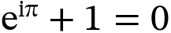
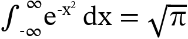
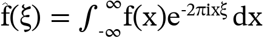
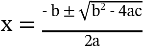
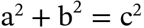
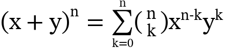
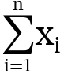
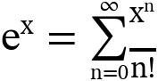
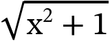
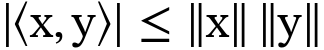

欧拉恒等式
基础能力LaTeX: e^{i\pi}+1=0
mathjax-c

MathJax
$$e^{i\pi}+1=0$$
左侧是当前 `mathjax-c` 通过 CLI 直接生成的 PNG，右侧是浏览器中 MathJax 的参考渲染。 这个页面的作用不是证明当前实现已经接近 `MathJax-src`，而是把差距暴露出来，方便你快速决定下一轮修复优先级。
LaTeX: e^{i\pi}+1=0

LaTeX: \int_{-\infty}^{\infty} e^{-x^2}\,dx=\sqrt{\pi}

LaTeX: \hat{f}(\xi)=\int_{-\infty}^{\infty}f(x)e^{-2\pi i x\xi}\,dx

LaTeX: x=\frac{-b\pm\sqrt{b^2-4ac}}{2a}

LaTeX: a^2+b^2=c^2

LaTeX: (x+y)^n=\sum_{k=0}^{n}\binom{n}{k}x^{n-k}y^k

LaTeX: \sum_{i=1}^{n} x_i

LaTeX: e^x=\sum_{n=0}^{\infty}\frac{x^n}{n!}

LaTeX: \sqrt{x^2+1}

LaTeX: |\langle x,y\rangle|\leq \|x\|\,\|y\|

说明：页面右侧依赖 CDN 版 MathJax。如果浏览器离线，右侧参考列不会渲染，但左侧 PNG 仍然可以正常查看。